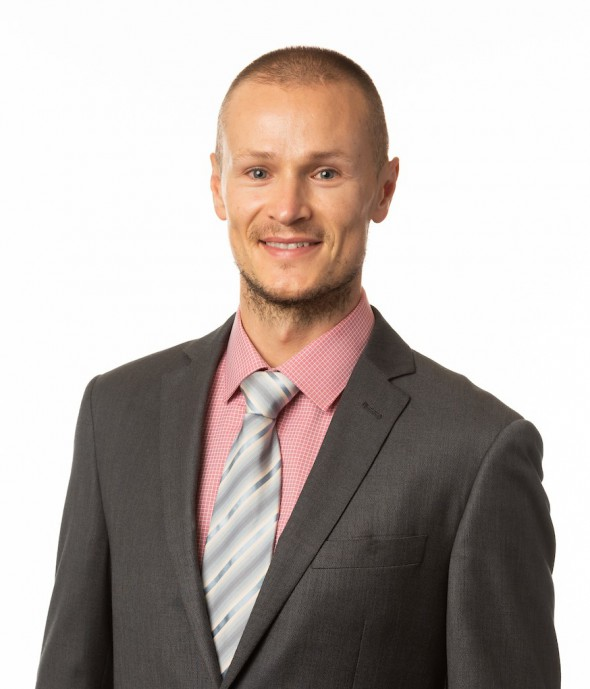
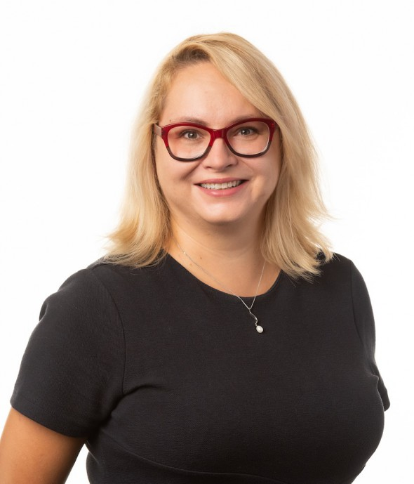
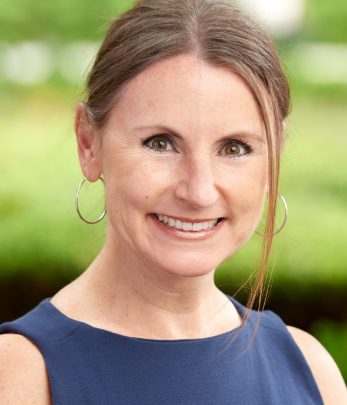
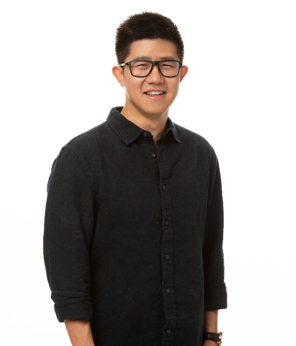

|
|
USC Marshall Statistics Group |
The statistics group consists of sixteen full time faculty. The group's main research interests are:
Applications of statistics in marketing, finance and other business disciplines; High dimensional statistical inference. Including high dimensional regression, classification and variable selection; Financial econometrics; Functional data analysis; Large-scale multiple testing and Social and economic network analysis.
Statistics Seminars and Marshall Seminars
|
Information on Marshall's
PhD in Statistics and Data Science |
 |
Faculty
|
Arif
Ansari Professor of Clinical Ph.D. University of Southern California |
|
 |
Jacob Bien Associate Professor Ph.D. Stanford University |
 |
Yingying Fan Professor Ph.D. Princeton University |
 |
Paromita
Dubey Assistant Professor Ph.D. UC Davis |
|  |
Robertas Gabrys Assistant Professor of Clinical Ph.D. Utah State University |
 |
Gareth James Professor and Deputy Dean Ph.D. Stanford University |
 |
Adel Javanmard Associate Professor Ph.D. Stanford University |
|
Jinchi Lv Professor Ph.D. Princeton University |
|
|  |
Inga
Maslova Assistant Professor of Clinical Ph.D. Utah State University |
 |
Gourab Mukherjee Assistant Professor Ph.D. Stanford University |
|  |
Dawn
Porter Professor of Clinical Ph.D. New York University |
 |
Phil
Rogers Associate Professor of Clinical Ph.D. University of California, Berkeley |
 |
Matteo Sesia Assistant Professor Ph.D. Stanford University |
 |
Abbass Sharif Associate Professor of Clinical Ph.D. Utah State University |
 |
Wenguang Sun Professor Ph.D. University of Pennsylvania |
 |
Xin Tong Assistant Professor Ph.D. Princeton University |
| Ph.D. Students | |
 |
Rashmi Ranjan Bhuyan Second year Ph.D. Student |
 |
Greg Faletto Fourth year Ph.D. Student |
 |
Sang-wook
Lee First year Ph.D. Student |
 |
Mohammad Mehrabi Fourth year Ph.D. Student |
|  |
Yiqiu Shen Third year Ph.D. Student |
 |
Brad Rava Fifth year Ph.D. Student |
 |
Simeng Shao Fifth year Ph.D. Student |
 |
Patrick
Vossler Fifth year Ph.D. Student |
 |
Yanfei Zhou
First year Ph.D. Student |
| Postdoctoral Scholars | |
 |
Timothy Coleman
Ph.D. University of Pittsburgh |
 |
Lan Gao
Ph.D. The Chinese Univeristy of Hong Kong |
 |
Sangwon (Justin) Hyun
Ph.D. Carnegie Mellon University |